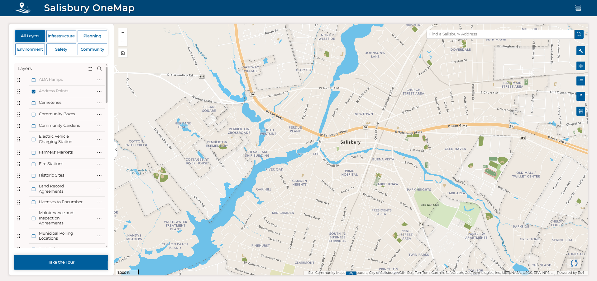

1
2
3
4
5
6
Salisbury OneMap
City of Salisbury, Maryland
This interactive map brings City data together in one place — layers, address lookups, bookmarks, and more. This quick tour shows you where everything lives.
1
Click the numbered markers to learn about each tool